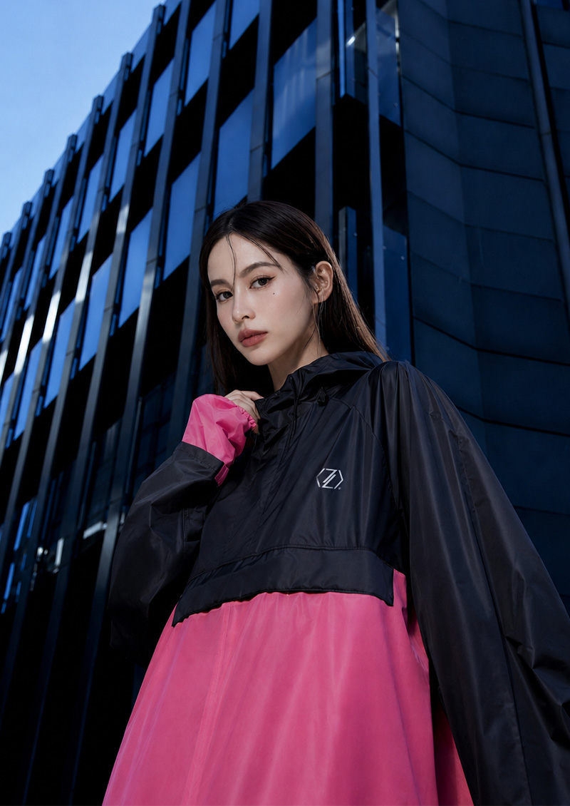
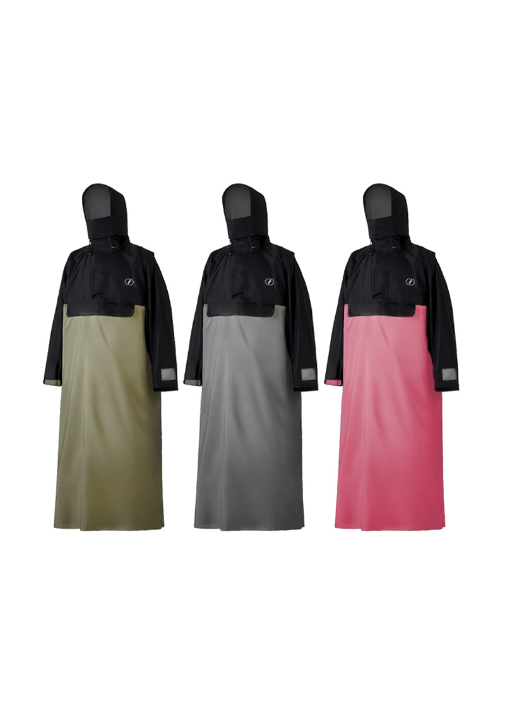
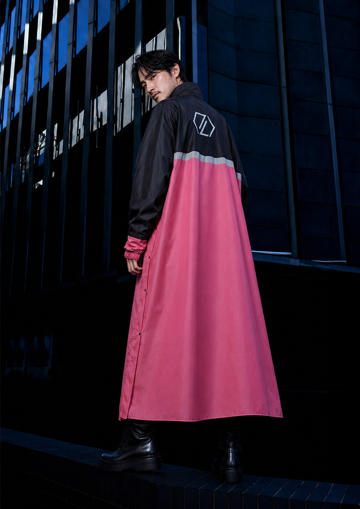

側開秒穿的機車雨衣，官網、快電商、momo三個通路實際售價一致為新台幣1,380元，比同型式競品貴三成到一倍。商品頁上找得到的差異化只有三個：杜邦鐵氟龍防水膜、三層防倒流結構、三種衣長。這頁把三通路比價、規格、受眾、競品與市場缺口拆開整理，每個數字都標來源與查詢日期。

| 通路 | 標示原價 | 目前售價 | 備註 |
|---|---|---|---|
| CHECK2CHECK官網 | NTD 2,080 | NTD 1,380 | 全站滿699免運，另有任2件85折限時活動 |
| 快電商（夥伴店） | NTD 1,580 | NTD 1,380 | 滿千免運，鈦粉拼黑需分開下單 |
| momo購物網 | 市售價2,080 | 促銷價1,380 | 品號13287077，同頁賣同系列軍綠與鈦灰 |
三個通路的實際售價一致（1,380元），但原價標法不同：官網與momo標2,080元，快電商後台標1,580元。同一支商品在不同通路的折數看起來會差很多，這是很好的教學點。來源：快電商商品頁／check2check.com.tw／momoshop 2026年9月12日
官網加購區（可視為連帶銷售的分析材料）：C2C秒穿防水雨鞋套加129元（原價199元）、防潑水極鋒雙肩包加1,280元（原價1,580元），另有冰絲四角褲、防曬噴霧、無縫內褲、針織背心四項小額加購。來源：check2check.com.tw 2026年9月12日
| 材質 | 超輕聚酯纖維 |
| 防水膜 | 超輕羽量級杜邦鐵氟龍防水膜 |
| 防水係數 | 品牌宣稱通過SGS耐水壓測試，10000mmH₂O（公開頁面未附報告編號與日期，見第12段） |
| 重量 | 約800公克，正負50公克 |
| 顏色 | 鈦粉拼黑（本次新色），同款另有軍綠拼黑、鈦灰拼黑 |
| 尺寸 | 一般型L、加長型XL、特加長型2XL |
| 產地 | 越南製造，台灣監製 |
| 保固 | 僅針對商品本身，七天內新品瑕疵更換 |
來源：快電商商品頁 2026年9月12日

以下是官方賣點原文，依內容拆成三組整理，沒有新增素材包以外的賣點。
來源：快電商商品頁／官網商品描述 2026年9月12日
鈦粉拼黑（預購中，2026年9月30日起出貨）
同款其他兩色：官網標示鈦灰拼黑售完，預計2027年1月補貨；軍綠拼黑售完，預計2027年4月補貨。來源：check2check.com.tw／快電商後台庫存資料 2026年9月12日
兩個既有顏色都缺貨到明年，新色用預購方式先收單，缺貨期長達半年以上。缺貨本身就是文案素材，但也要提醒消費者實際出貨時間，見第09段缺口四。
| 數字 | 內容 | 來源 |
|---|---|---|
| 1,466萬輛 | 全台機車掛牌數（2025年2月底） | 交通部公路單位統計，經新聞報導引用 |
| 每百人63輛 | 台灣平均機車持有密度 | 同上 |
| 18.5萬人 | 外送平台從業人員（2022年底），2019年為4.5萬人，三年多三倍 | 勞動部職安署統計，經媒體引用 |
| 女性占22% | 外送員性別比（男性78%） | 104人力銀行分析，媒體引用 |
以上四個數字是二手引用，媒體轉述官方統計，非一手查證。一手查法：交通部統計查詢網的機動車輛登記數可以查到縣市別數字。
6-2 從商品設計反推的使用者（推論）官方頁面沒有寫目標客群，以上是從設計倒推的，不是官方資料。
這個品類的核心焦慮不是好不好看，是會不會濕、穿不穿得快。
7-1 價格帶（一手，逐筆撈PChome公開搜尋結果，2026年9月12日）
| 搜尋詞 | 商品總數 | 最低 | 中位數 | 最高 |
|---|---|---|---|---|
| 側開雨衣 | 35筆 | 655 | 799 | 1,080 |
| 機車雨衣 | 208筆 | 449 | 659 | 1,880 |
| 背包雨衣 | 203筆 | 139 | 884 | 1,500 |
最低、中位、最高取自各搜尋詞熱銷前20筆。本品賣1,380元，比側開雨衣整個價格帶的最高價還高28%，在PChome的側開款裡找不到同價位對手。
7-2 同型式的具體對手（一手，PChome售價）
| 品牌與款式 | 售價 | 型式 |
|---|---|---|
| 貝塔BETA專利雙側開口袋風雨衣（背包款、加大尺寸） | 655／749 | 一件式側開背包款 |
| 太空型雙側開雨衣 | 660 | 一件式側開 |
| 俊挺 背包款雙側開多功能防水風雨衣（含雨褲、鞋套） | 764 | 套裝 |
| 背包風雨衣（雙側開加內斜開） | 770 | 一件式 |
| 秒穿世袋全能側開雨衣（贈收納袋） | 790 | 一件式 |
| 艾斯 雙側開背包款專利內斜拉風雨衣 | 799 | 一件式 |
| 賽德、達克 雙側開背包款套裝風雨衣 | 969／990 | 兩件式套裝 |
| 後背包專用側開雨衣YW-R331（三層防水、高係數反光條） | 988 | 一件式 |
| CORVIX疾速秒穿側開雙拉鍊成人雨衣 | 1,080 | 一件式 |
| CHECK2CHECK本品 | 1,380 | 一件式側開背包款 |
7-3 內容網站推薦文裡的對照（二手，僅供參考）
一篇2026年的機車雨衣推薦文把KARAKORAM側開秒穿一件式列為599元，同樣宣稱耐水壓10000mm。該文也把本品列為1,280元，跟官網與momo今天的1,380元不一樣。二手價格一律要自己回通路核對。
7-4 要回答的問題
同樣是側開、同樣能穿後背包，對手655到1,080元，而且有對手也宣稱10000mm耐水壓。這支商品貴30%到100%，理由是什麼？商品頁上找得到的差異化只有三個：杜邦鐵氟龍防水膜、三層防倒流結構、三種衣長（L、XL、2XL）。分析頁如果不回答這一題，等於沒有分析。
正反都要放。負評要照原意寫，不改寫成比較好聽的話，一頁只有好評的分析頁沒有人相信。
來源：Mobile01討論串／部落格開箱／Threads評論 2026年9月12日
每一條都指出根據哪一段資料，沒有根據的建議不寫進來。
側開雨衣在PChome的價格帶是655到1,080元，本品1,380元，高於上緣28%。上面沒有對手，代表這個價位是品牌自己開的，不是市場競出來的。
建議：分析頁與商品頁都要有一段「為什麼貴」，把杜邦膜、三層防倒流、三種衣長換算成使用者感受得到的差別，寫成「同樣淋30分鐘，差別在哪裡」，只寫規格名詞沒有用。
側開雨衣熱銷前20筆裡，品名含「女」的只有1筆，含「嬌小」的0筆；機車雨衣前20筆同樣是1筆與0筆。而外送員裡女性占22%。本品在官網與快電商只有L、XL、2XL三種長度，momo的同系列頁面則列出「嬌小型」。
建議：先向品牌確認嬌小型是否仍在產，如果有就補上通路一致性；如果沒有，這是一個沒有人在做的尺寸缺口。
公開評價裡最具體的負評是「冬天穿多層衣服時，肩部雙側拉鍊會卡到喉嚨」。搜尋結果裡沒有任何一個品牌在溝通「厚衣層怎麼穿」。
建議：做一段冬季穿法的內容（影片或圖解），直接回答這個負評，這是把負評變成內容的最短路徑。
鈦灰要等到2027年1月、軍綠要等到2027年4月，新色用預購收單，9月30日起出貨。而7-2的對手隨時有貨，價格只有一半。
建議：預購頁要把「為什麼值得等」寫清楚（限量、新色、規格差異），並且把出貨日寫在最上面。雨季是有時效的需求，等待期就是流失點。
對手有專利側開、有背包款、有三層防水、有反光條，宣稱看起來都很像。搜尋得到的內容多半是單品開箱，沒有同價位或跨價位的對照文章。
建議：做一頁比較內容（不指名攻擊，只比公開規格與價格），這在搜尋與AI問答上都是空的位置。這頁本身就是這個缺口的答案。
品牌宣稱通過SGS耐水壓10000mmH₂O，但公開頁面沒有報告編號與日期。對手同樣宣稱10000mm，消費者無法分辨。
建議：把報告編號、測試日期、測試項目公開，這是唯一能把「宣稱」變成「證據」的做法，也是溢價的支撐。
| 品牌 | CHECK2CHECK，主力是機能雨衣與機能服飾 |
| 營業人名稱 | 建恆貿易有限公司 |
| 統一編號 | 55776370 |
| 通路結構 | 自營官網、momo等第三方電商、快電商夥伴店 |
| 官網其他系列 | 冰磁系列、機能褲系列、登機系列、暖磁系列，另有實體門市與機能研究室頁面 |
| 客服時間 | 10:00到12:30、13:30到17:00，例假日與國定假日公休 |
來源：check2check.com.tw頁尾／官網導覽列 2026年9月12日

所有數字都是2026年9月12日的快照。價格、庫存與活動隨時會變，引用本頁時請一併標註查詢日期。